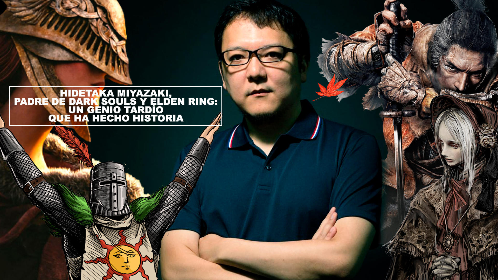

From Software es una desarrolladora de
videojuegos japonesa fundada en 1986 en Tokio por Naotoshi Zen, Japón. Originalmente,
la compañía se dedicaba al desarrollo de software para ordenadores
empresariales. Su transición hacia los videojuegos comenzó en 1994
con el lanzamiento de su primer título, King's Field, un RPG en
primera persona exclusivo para la PlayStation original. Este juego
marcó el inicio de su enfoque en experiencias inmersivas y
desafiantes, características que definirían a la compañía.
Conocenos
Director: Hidetaka Miyazaki

Historía y evolución
Primeros años (1994-2000)Después de King's Field, From Software continuó desarrollando títulos de nicho como las secuelas de esta saga y la serie de simulación de mechas Armored Core (1997). Estos juegos ganaron popularidad entre los jugadores que buscaban desafíos técnicos y mecánicas profundas.
Expansión en géneros (2000-2009)La compañía experimentó con diferentes géneros, como el RPG táctico y la acción, lanzando títulos como Lost Kingdoms y Otogi. Sin embargo, el punto de inflexión llegó en 2009 con el lanzamiento de Demon's Souls, un innovador RPG de acción exclusivo para PlayStation 3 que introdujo las bases de su futuro éxito.
Era Soulsborne (2009-2019)Con Demon's Souls y la posterior trilogía Dark Souls (2011-2016), From Software alcanzó reconocimiento global. Estos juegos establecieron un subgénero conocido como "Souls-like", caracterizado por su dificultad elevada, diseño de niveles interconectados y narrativas minimalistas.
En 2015, lanzaron Bloodborne, un exclusivo de PlayStation 4 que combinó la fórmula Souls con una estética gótica y un enfoque más agresivo en el combate.
Innovación y consolidación (2019-presente)Sekiro: Shadows Die Twice (2019) introdujo un sistema de combate basado en la postura y un diseño más centrado en la acción y sigilo. Fue galardonado como Juego del Año en los The Game Awards.
En 2022, lanzaron Elden Ring, una colaboración con el autor George R. R. Martin que expandió la fórmula de los Souls a un vasto mundo abierto. Este título consolidó a From Software como una de las principales desarrolladoras de la industria.